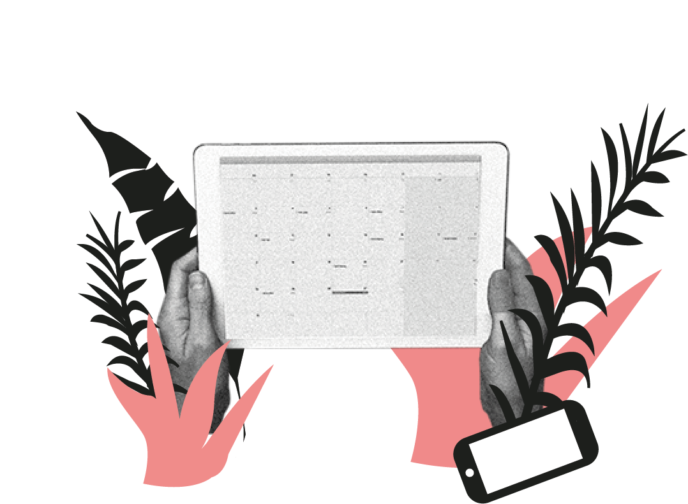
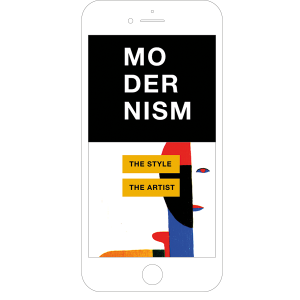
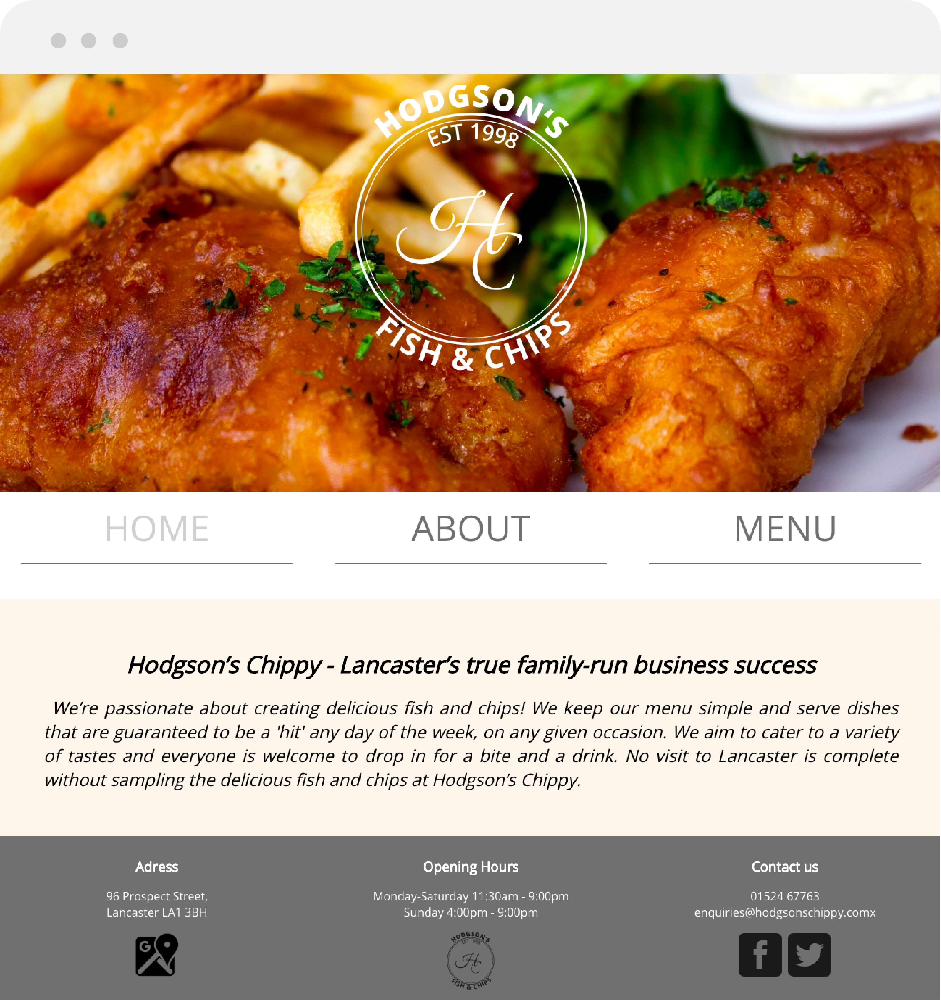

Basic Web
Individual work and group project
In the first theme I learned to structure content using basic semantic markup (HTML5), and present content using CSS3 in order to create a simple website. I have learnt about the basics of colours, typography, design principles and layouts for web, which wasn't all new to me, but definitely a good refresher on principles I have learnt 10 years ago.
Responsive website
What?
Create a website for mobile first. We were given a style and had to come up with a design for a website introducing this style. My style was "modernism" and I chose the artist "Kasimir Malevich" who was a member of the suprematism movement. Throughout the project I rediscovered my affection for the history of art and spend several hours in the library researching my given style.
How?
HTML5, CSS3 and Universal Design Principles.
Skills gained
Working with Xd and prototypes to plan and design a website
Mobile first and media queries in CSS
Realise that good planning saves time in coding.
Basic redesign
What?
We made a clean redesign of a website for a restaurant selling fish and chips.
My role?
Logo design, overall colors and design, presentation.
Skills gained
Working with style tiles
Group work management
Setting up a collaboration agreement